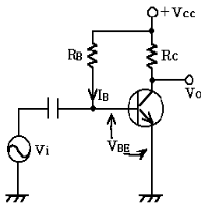
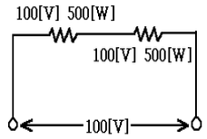
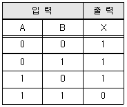
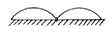
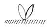
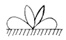
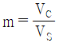
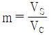
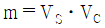
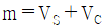

무선설비기능사 (2006-04-02 기출문제)
1과목: 임의 구분
1. 다음의 고정 바이어스 회로에서 안정도 S는 얼마인가? (단, 트랜지스터의 전류 증폭률 β는 50 이다.)

- 49
- 50
- 51
- 52
(정답률: 알수없음)

2. 발진 주파수를 측정할 수 있는 계측기가 아닌 것은?
- 주파수계수기(Frequency Counter)
- 오실로스코프(Oscilloscope)
- 파워메타(Power Meter)s
- 스펙트럼 분석기(Spectrum Analyzer)
(정답률: 알수없음)
3. 다음 중 사인파 교류의 전류를 식으로 나타낼 때 필요 없는 변수는?
- 평균전력
- 전류의 최대값
- 주파수
- 위상각
(정답률: 알수없음)
4. 트랜지스터를 사용한 진폭변조 회로에서 컬렉터 변조방식의 각각의 단자에 인가하는 요소는?
- 반송파는 이미터 단자에, 변조입력은 베이스 단자에 인가한다.
- 반송파는 컬렉터 단자에, 변조입력은 컬렉터 단자에 인가한다.
- 반송파는 베이스 단자에, 변조입력은 컬렉터 단자에 인가한다.
- 반송파는 베이스 단자에 변조입력은 이미터 단자에 인가한다.
(정답률: 알수없음)
5. 다음 중 열전효과에 의한 현상이 아닌 것은?
- 지벡 효과
- 펠티어 효과
- 톰슨 효과
- 광도전 효과
(정답률: 알수없음)
6. 120[Ω]의 저항 3개를 조합하여 얻어지는 가장 적은 합성 저항 값은?
- 40[Ω]
- 80[Ω]
- 120[Ω]
- 360[Ω]
(정답률: 알수없음)
7. R - L - C 직렬회로에서 단자전압이 전류와 동상이 되기 위한 조건은?
- ωL2C2 = 1
- ω2LC = 1
- ωLC = 1
- ω = LC
(정답률: 알수없음)
8. N형 반도체를 만드는 불순물은 어느 것인가?
- 붕소(B)
- 인듐(in)
- 칼륨(Ga)
- 비소(As)
(정답률: 알수없음)
9. A급 증폭기의 동작은 정특성 곡선상의 어느 점에 설정 하는가?
- 정특성 곡선에 컬렉터 전류의 차단점보다 더욱 부(-)쪽에 잡는다.
- 정특성 곡선에서 컬렉터 전류의 차단점에 잡는다.
- 정특성 곡선에서 직선부의 중앙부에 잡는다.
- 정특성 곡선의 안곡부에 잡는다.
(정답률: 알수없음)
10. 전류 I, 전압 V, 저항 R, 컨덕턴스 G 일 때 다음의 관계식 중 옳은 것은?
- I = GV
- I = RV
- I = RG
- V = GI
(정답률: 알수없음)
11. 100[V], 500[W]의 전열기 2개를 그림과 같이 접속하였을 때의 전력은 얼마인가?

- 5[W]
- 250[W]
- 500[W]
- 1000[W]
(정답률: 알수없음)
12. 주파수 변조를 진폭변조와 비교할 경우 옳지 않은 것은?
- 점유 주파수 대역폭이 넓어진다.
- 초단파대 통신에 적합하다.
- S/N비가 좋다.
- 에코(ecno)의 영향이 많다.
(정답률: 알수없음)
13. 자기회로에서 투자율이 μ, 자장의 세기가 H 일 때 자속밀도 B는?
- H/μ [Wb/m2]
- μH [Wb/m2]
- H2/μ [Wb/m2]
- μH2 [Wb/m2]
(정답률: 알수없음)
14. 자속밀도 2[Wb/m2]의 평등 자기장내에 전류 3[A]가 흐르는 길이 20[cm]의 도선이 자기장의 방향과 30도로 놓여 있을 때 도선에 작용하는 힘이 세기는 얼마인가?
- 0.4 [N]
- 0.6 [N]
- 1.2 [N]
- 1.5 [N]
(정답률: 알수없음)
15. 수정발진기가 안정된 발진을 지속하기 위하여 수정 임피던스는 어떤 상태가 되어야 하는가?
- 저항성
- 유도성
- 용량성
- 확산성
(정답률: 알수없음)
16. 컴퓨터 및 데이터 통신에 널리 쓰이는 ASCII 코드는 몇 bit 로 구성되어 있는가? (단, 패리티 비트 제외)
- 4
- 7
- 8
- 9
(정답률: 알수없음)
17. 반가산기(half adder)는 어떤 회로의 조합인가?
- AND와 OR회로
- AND와 NOT회로
- EX-OR와 AND회로
- EX-OR와 OR회로
(정답률: 알수없음)
18. 다음 보기의 진리표에 해당되는 논리회로는?

- AND 회로
- NOR 회로
- NAND 회로
- OR 회로
(정답률: 알수없음)
19. 입력장치와 출력장치로 올바르게 짝지은 것은?
- 입력장치 : Scanner, 출력장치 : OCR
- 입력장치 : Printer, 출력장지 : X-Y Plotter
- 입력장치 : OCR, 출력장치 : X-Y Plotter
- 입력장치 : 디지타이저, 출력장치 : Scanner
(정답률: 알수없음)
20. 다음 중 컴퓨터를 교육의 도구로 활용하는 시스템은 무엇인가?
- CAM(Computer Aided Manufacturing)
- CAI(Computer Aided Instruction)
- FMS(Flexible Manufacturing System)
- CAD(Computer Aided Design
(정답률: 알수없음)
2과목: 임의 구분
21. 중앙처리 장치의 기능이라고 할 수 없는 것은?
- 정보의 기억
- 정보의 연산
- 처리기능의 제어
- 오퍼레이터와의 대화(MMI)
(정답률: 알수없음)
22. 16진수 27D를 10진수로 변환하면 얼마인가?
- 237
- 357
- 637
- 897
(정답률: 알수없음)
23. 다음 설명 중 옳지 않은 것은?
- interpreter는 원시프로그램을 번역한다.
- interpreter는 목적프로그램을 생산한다.
- compiler는 목적프로그램을 생산한다.
- compiler는 원시프로그램을 번역한다.
(정답률: 알수없음)
24. 집적회로(Integrated)를 기본소자로 사용한 전자계산기의 세대는?
- 1세대
- 2세대
- 3세대
- 4세대
(정답률: 알수없음)
25. 다음 중 프로그램을 작성 단계에서 어떠한 데이터를 어떻게 입력하여, 처리 결과를 어떻게 출력할 것인지를 결정하는 단계는?
- 순서도 작성 단계
- 문제 분석 단계
- 프로그램 번역 단계
- 입ㆍ출력 설계 단계
(정답률: 알수없음)
26. 의사 안테나(Dummy antenna)의 설명 중 틀린 것은?
- 무지향성으로 먼 거리까지 전파복사가 잘된다.
- 송신기 시험시 사용된다.
- 안테나 대신 각종 측정시 사용된다.
- 안테나의 등가회로를 구성하여 사용한다.
(정답률: 알수없음)
27. 송신기를 동작시키고 변조기의 입력에 1000[Hz]의 신호를 넣어 100[%] 변조시킨 다음 피변조파의 일그러짐이 충분히 작은지의 여부를 알아봄으로써 알 수 있는 특성을 무엇이라고 하는가?
- 피변조 증폭기의 특성
- 변조 특성
- 피변조파 특성
- 변조 주파수 특성
(정답률: 알수없음)
28. λ/4 수직접지 안테나의 수직면내의 지향 특성은?



(정답률: 알수없음)
29. 다음 중 정지위성 고도는 얼마인가?
- 16,000[km]
- 36,000[km]
- 40,000[km]
- 10,000[km]
(정답률: 70%)
30. 10[mV/m]의 전계강도를 [dB]로 환산하면 얼마인가? (단, 기준으로서 1[μV/m]을 0[dB]로 한다.)
- 40[dB]
- 80[dB]
- 120[dB]
- 160[dB]
(정답률: 알수없음)
31. 자기폭풍(자기람)을 받았을 때 일반적으로 전리층에 나타나는 현상으로 옳은 것은?
- F2층의 임계 주파수가 내려간다.
- D층의 전자밀도가 매우 증가한다.
- E층의 전자밀도가 매우 증가한다.
- 전리층에 나타나는 현상이 없다.
(정답률: 알수없음)
32. AM 송신기에서 100[KHz]의 반송파를 3000[Hz]의 가청주파수로 진폭변조했을 때 상측파대 주파수는 몇[KHz]인가?
- 997
- 1000
- 1003
- 10⑤
(정답률: 알수없음)
33. 다음 중 접지 안테나에 해당되지 않는 것은?
- 원정관 안테나
- 역 L형 안테나
- dipole 안테나
- 수직접지 안테나
(정답률: 알수없음)
34. 송신 안테나로부터 1[km] 떨어진 지점에서 측정한 전계강도가 100[㎶/m]라 한다. 5[km] 거리의 전계강도로 환산하면 몇[㎶/m]인가?
- 10[㎶/m]
- 20[㎶/m]
- 30[㎶/m]
- 40[㎶/m]
(정답률: 알수없음)
35. FM 수신기에서 리미터의 사용 목적으로 가장 타당한 것은?
- 페이딩이나 잡음에 의해 발생된 진폭변화를 제거하기 위해
- 기생진동을 방지하기 위해
- 고조파에 의한 주파수의 찌그러짐을 방지하기 위해
- 전원 전압의 변동을 방지하기 위해
(정답률: 알수없음)
36. FM파의 중심 주파수에서 상ㆍ하 주파수의 편이를 정ㆍ부 진폭의 변화로 바꾸어 검파하는 회로는?
- 진폭 제한회로
- 스켈치회로
- 디 엠파시스회로
- 주파수 변별회로
(정답률: 알수없음)
37. 전원 주파수 60[Hz]를 사용하는 정류기로 180[Hz]의 맥동 주파수를 나타내는 정류방식은?
- 삼상 반파 정류회로
- 삼상 전파 회로
- 단상 반파 정류회로
- 단상 전파 정류회로
(정답률: 알수없음)
38. 간접 FM방식을 사용한 FM송신기의 구성 요소가 아닌 것은?
- 수정 발진기
- 위상변조기
- 순시편이 제어회로(IDC)
- 자동주파수 제어회로(AFC)
(정답률: 알수없음)
39. 정지위성에서 이론적으로 지구 표면적을 볼 수 있는 방위(%)로 가장 근접한 것은?
- 10 (%)
- 30 (%)
- 40 (%)
- 60 (%)
(정답률: 알수없음)
40. 다음 중 오실로스코프로 측정할 수 없는 것은?
- 주파수
- 전압
- 변조도
- 임피던스
(정답률: 알수없음)
3과목: 임의 구분
41. 위성방송 수신장치가 아닌 것은?
- 안테나
- 변환기
- 위성 수신기
- 대전력 증폭기
(정답률: 알수없음)
42. 급전선의 구비 조건이 아닌 것은?
- 전송효율이 좋을 것
- 절연 내력이 클 것
- 유도방해를 잘 받아야 할 것
- 임피던스 정합이 용이할 것
(정답률: 알수없음)
43. 다음 중 송신기의 출력을 측정하기에 부적합한 것은?
- 의사 공중선(Dummy Antenna)을 사용하는방법
- 전구 부하(조도법)에 의한 방법
- 볼로미터(Bolometer)에 의한 방법
- 주파수 카운터를 사용하는 방법
(정답률: 알수없음)
44. DSB 통신방식과 비교하여 SSB방식의 장점으로 맞는 것은?
- 점유 주파수 대역폭이 2배이다.
- 송신전력이 적게 소비된다.
- 회로 구성이 간단하다.
- 비트(beat)방해가 많이 일어난다.
(정답률: 알수없음)
45. 진폭변조의 변조도[m]을 구한는 식으로 옳은 것은? (단, VS : 변조 신호진폭, VC :반송파 신호진폭)




(정답률: 알수없음)
46. 유도통신설비의 선로에 통하는 고주파전류의 기본파에 의한 누설전계강도는 그 송신장치로부터 1킬로미터 이상 떨어지고, 선로로부터의 거리가 기본주파수의 파장을 2π로 나눈 지점에서 누설전계 강도의 허용치로 맞는 것은?
- 100 ㎶/m 이하
- 200 ㎶/m 이하
- 100 ㎶/m 이상
- 200 ㎶/m 이상
(정답률: 알수없음)
47. 송신설비의 전력을 규격전력으로 표시할 수 없는 것은?
- 아마추어국
- 실험국
- 비상위치지시용 무선표지설비
- 기지국
(정답률: 알수없음)
48. 다음 중 전자파적합등록 대상기기에 해당하지 않는 것은?
- 정보기기류
- 방송수신기기류
- 전시용으로 수입하는 이륜자동차
- 형광등 등 조명기기류
(정답률: 알수없음)
49. 다른 무선국의 정상적인 운용을 방해하는 전파의 발사ㆍ복사 또는 유도를 정의하는 것은?
- 혼신
- 감쇠
- 잡음
- 왜곡
(정답률: 알수없음)
50. 공중선계의 충족 조건으로서 거리가 먼 것은?
- 공중선의 이득이 높을 것
- 정합은 신호의 반사손실이 최소화되도록 할 것
- 지향성은 복사되는 전력이 목표하는 방향을 벗어나지 아니하도록 안정적일 것
- 수신주파수의 범위가 좁을 것
(정답률: 알수없음)
51. 비밀누설의 주요 요인에 해당되지 않는 것은?
- 무선침묵 위반
- 취약성있는 통신망 이용
- 비밀내용의 평문송신
- 비화장치된 유선통신
(정답률: 알수없음)
52. 비밀문서를 수발할 때 가장 안전한 방법은?
- 음어화에 의한 방법
- 초고속 통신망에 의한 방법
- 직접 접촉에 의한 방법
- 비화장치에 의한 방법
(정답률: 알수없음)
53. 전파 형식의 표시에서 주반송파를 변조시키는 신호의 특성 중 무변조신호를 나타내는 기호는?
- 0
- 1
- 2
- 3
(정답률: 알수없음)
54. 무선설비의 안전시설기준이 잘못 기술된 것은?
- 무선설비에 전원의 공급을 위하여 고압전기가 인입되는 변압기는 절연차폐내에 수용한다.
- 무선설비의 공중선계에는 피뢰기 및 접지장치를 설치하여야 한다. (단, 육상이동국 등 휴대형 무선설비의 공중선은 제외한다.)
- 무선설비의 공중선은 공중선주의 동요에 의하여 절단되지 않도록 보호되어야 한다.
- 송신설비의 공중선, 급전선 등 고압전기를 통하는 장치는 사람이 보행하는 평면으로부터 3.5미터 이상의 높이에 설치하여야 한다.
(정답률: 알수없음)
55. 무선설비 규칙에서 고압전기라고 함은 교류 몇 V 이상의 전압을 말하는가?
- 200 V
- 500 V
- 600 V
- 750 V
(정답률: 알수없음)
56. 통신보안의 1차적 책임은 누구에게 있는가?
- 기관장
- 통신이용자
- 전문기안자
- 전문통제권자
(정답률: 알수없음)
57. 전파법이 목적을 가장 타당한 것은?
- 전파자원의 균등한 분배 보장
- 전파이용기술 개발 및 공공복리 증진
- 전파기술 개발의 관리
- 전파의 자유 이용 보장
(정답률: 알수없음)
58. 형식등록을 하여야 하는 무선설비가 아닌 것은?
- 무선 호출국용 무선설비의 기기
- 이동가입 무선전화 장치
- 네비텍스 수신기
- 무선 CATV용 무선설비 기기
(정답률: 알수없음)
59. 무선설비가 안정적으로 동작하는데 필요한 표준상태의 전압은?
- 안정전압
- 정상전압
- 표준전압
- 정격전압
(정답률: 알수없음)
60. 정보통신기기 인증표시에 해당되지 않는 것은?
- 형식검정 합격표시
- 형식등록표시
- 전자파적합등록표장
- 전자파흡수율측정표시
(정답률: 알수없음)
S = ΔVBE / ΔIB
여기서 ΔVBE는 베이스-에미터 전압의 변화량, ΔIB는 베이스 전류의 변화량을 의미합니다.
고정 바이어스 회로에서는 베이스 전압이 일정하게 유지되므로 ΔVBE는 0입니다. 따라서 안정도 S는 다음과 같이 간단하게 계산할 수 있습니다.
S = 0 / ΔIB = 0
즉, 안정도 S는 0입니다. 그러나 보기에서는 "49", "50", "51", "52" 중에서 하나를 선택해야 합니다.
여기서 주의할 점은 안정도 S가 β에 의존한다는 것입니다. β가 50일 때 안정도 S는 0이지만, β가 조금만 변하면 안정도 S도 변할 수 있습니다.
고정 바이어스 회로에서 안정도 S는 β에 의존하여 변할 수 있으므로, β가 49일 때는 S가 음수가 되고, β가 50일 때는 S가 0이 되며, β가 51일 때는 S가 양수가 됩니다. 따라서 정답은 "51"입니다.